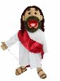

Wednesday, July the 20th, 2005
back to: title, date or indexes

That's right, the figure above is Almighty God, in His incarnation as Jesus. Here is the superb description of Him from Puppet Revelation:
Jesus is a beautiful full body, half body, rod arm puppet. This big mouth puppet is 30“ tall and has removable legs, mouth straps, 1.5 inch neck movement, same fabric throughout and comes with one puppet rod. This religious puppet is an excellent choice for puppet ministry and children's church. Use him to teach scripture and for many bible lessons. This biblical puppet is fully functional for both children and adults and can be used as a full body puppet or remove the legs to make a light weight rod style half body puppet. These puppets are similar to Muppet style puppets.
This Jesus puppet was made with great care and love and was designed to depict Christ in a loving, kind approachable way. We wanted a Jesus that children would want to know, love and cherish. He is in a garb of the biblical days with sandals and a satin deep red shawl that represents the blood shed on the cross and royalty as the King of Kings. All of this big mouth puppet's clothes are completely removable including his shoes. He has accentuated fingers, feet with toes (to wear sandals) and sewn elbow and knee joints. You can enter this lovely puppet from either the back in a ventriloquist puppet style or from the bottom like a standard half body puppet. He has a natural tanned skinned flesh tone and has big brown eyes and dark brown yarn hair and a short cropped beard. A plastic attachment is available to make the puppet appear to walk on water. This fully functional performance puppet is not only totally functional but he has been made affordable for puppet ministries with a tight budget.
Thanks to Private Eye for bringing this to my attention.